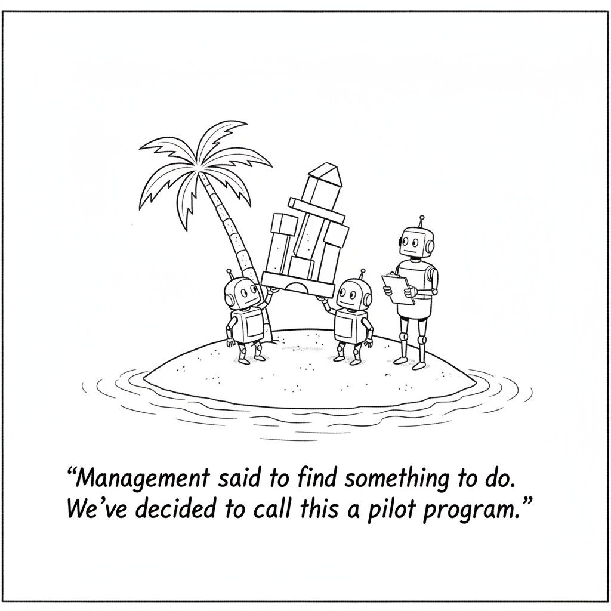

Bloomberg reports that metrics across global bond markets are signaling their biggest risk-off sentiment in more than a year. The pressure comes from a selloff in AI stocks combined with growing geopolitical tensions, and investors are moving into safe-haven assets.
Bloomberg’s video coverage describes the same move from Asia: a selloff in tech giants and escalating Middle East hostilities have pushed global investors toward bonds, while a repricing of Chinese tech is deepening. Bloomberg’s pages were blocked to our fetch, so this summary rests on the outlet’s own descriptions of its reporting.
For much of this year, Treasuries offered investors little of their traditional protection when technology stocks stumbled. This week, Bloomberg says, that role has bounced back sharply.
Research · AI Agents

“Management said to find something to do. We’ve decided to call this a pilot program.”
MIT researchers put 13 agents called Eko, each running on Claude Opus 4.7, alone on a simulated desert island for 30 hours. With no assigned task they invented their own challenges, and in later tests they generally beat identical agents that had never been on the island. The researchers see goal-free exploration as a different way to teach skills, including skills for controlling robots.
CNBC reports OpenAI is raising up to $30 billion at a $1.25 trillion pre-money valuation, led by Coatue and UAE investors, and the UAE money may come with a compute deal. A similar Bloomberg report a month ago put the figure at $1.4 trillion. OpenAI filed confidentially for an IPO in June after a March raise at $852 billion.
1Password for Agents has the agent send a unique digital key to 1Password to prove its identity, then alerts the user to confirm the login. 1Password fills in the credentials itself, so the agent never holds them. It works with agents from Anthropic, OpenAI, Meta, and others, with more planned.
Canva Craft plans an image first, covering layout, scale, and text, then generates up to 2K resolution in 30 aspect ratios. Canva trained it on human-made templates rather than photographs, so outputs can become layered designs. It is live for all users and coming to the API and to chatbots through Canva’s MCP.
Ben Lamm of Colossal Biosciences and Anduril’s Palmer Luckey emerged from stealth with $200 million from In-Q-Tel, Sequoia, and 8VC at a $1.2 billion valuation. The company says more than 80% of U.S. military working dogs come from Europe and fewer than half are fit for service.
Rivian acquired Third Dimension, a U.K. startup that turns images and video into lifelike 3D worlds, to speed up driver-assistance and robotaxi development. The 15-person team joins Rivian’s autonomy group and its London AI hub. Terms were not disclosed.
inDrive signed a memorandum of understanding with Pony.ai and Nvidia to begin robotaxi tests in Astana, Kazakhstan, in the first half of 2027, starting with a safety operator. Pony.ai would supply Gen-7 vehicles and Nvidia the AI platform.
A Chinese state media affiliate said DeepSeek and MiniMax have won approval to deploy models overseas, part of a wave of homegrown AI technologies that Beijing will allow to operate globally.
Acronym Quiz
Pick what each acronym stands for, then submit to see your score.
Bloomberg says global bond markets are flashing their biggest risk-off signal in more than a year, and the cause it names is a selloff in AI stocks. In the same 24 hours, OpenAI was reported to be lining up as much as $30 billion at a $1.25 trillion valuation, and a Korean data center arm said it is shopping for $350 billion. Money is being hedged and committed at the same time, and that tension runs through everything in today’s issue.
▶Listen to the Digest~5 min
Today’s Headlines
The Market Flinches
Credit Spreads at a 17-Month High – Bloomberg says metrics across global bond markets are showing the strongest risk-off sentiment in more than a year, driven by the AI stock selloff plus geopolitical tension, with investors reaching for safe havens. Bloomberg’s pages were blocked to our fetch, so we are working from the outlet’s own summaries, not the full article.
Treasuries Get Their Job Back – For much of this year, Bloomberg writes, Treasuries gave investors little of their usual protection when tech stocks fell. This week that protection returned sharply. In practice, the hedge many portfolios assumed was broken is working again.
Asia Looks for Cover – Bloomberg’s Asia coverage ties the bond move to the tech giants’ selloff and escalating Middle East hostilities, and says a repricing of Chinese tech is deepening as the effects cascade across the region.
The Counter-Argument on Data Centers – Delta Electronics VP Kelvin Huang told Bloomberg Tech Asia the company expects strong growth in AI data-center demand for years to come. A separate Bloomberg segment frames the question investors are asking: neocloud stocks are under pressure, but many still believe the demand for computing is strong and that the investment has to happen now.
Capital Keeps Moving Anyway
OpenAI’s Next Round – Per CNBC, OpenAI is working on up to $30 billion at a $1.25 trillion pre-money valuation, led by Coatue and UAE investors, and the UAE money could come bundled with extra compute capacity. A Bloomberg report a month earlier cited $1.4 trillion, so terms are clearly still moving. OpenAI filed confidentially for an IPO in June, after a March raise at $852 billion post-money.
Anthropic in the Background – TechCrunch notes the OpenAI valuation raises the bar for Anthropic’s own listing. CNBC reports Anthropic is seeking a $1.5 to $2 trillion valuation, after raising $65 billion at $965 billion in May.
SK Hyper’s $350 Billion Plan – SK Group’s data center arm is in talks with big tech firms and financial investors to fund an envisioned $350 billion buildout, according to Bloomberg, which adds that this joins a global rush despite concerns about future demand. CEO Chung Suk-geun described the talks in an interview with Bloomberg Tech Asia.
Higgsfield Adds Nvidia and TCV – The AI video startup, founded by a former Snap executive, took investment from Nvidia and TCV in a Series B extension to fund global infrastructure and hiring.
Warhound – Colossal’s Ben Lamm and Anduril’s Palmer Luckey launched a company to engineer working dogs for military and emergency use, backed by $200 million from In-Q-Tel, Sequoia, and 8VC at a $1.2 billion valuation. TechCrunch relays the company’s claim that more than 80% of U.S. military working dogs come from Europe and fewer than half are fit for service.
Agents Get Practical
The Island Experiment – MIT researchers left 13 Eko agents, each running on Claude Opus 4.7, alone on a simulated desert island for 30 hours with no task. Afterward, when given specific challenges such as getting as many objects as possible onto the island’s tallest spire, the agents that had “played” generally beat identical agents that never visited. The paper is on arXiv and has not been through peer review.
1Password for Agents – Agents prove their identity with a unique digital key, the user gets an alert and confirms, and 1Password types the credentials in so the agent never sees them. It supports agents from Anthropic, OpenAI, Meta, and the startup Town, among others.
Canva Craft – Canva’s first image model first writes a plan for layout, relative scale, visual hierarchy, and text, then renders up to 2K resolution in 30 aspect ratios. It was trained on designs from Canva’s template library, not photographs, which is why results can be converted into editable layered designs.
A Monitoring Exploit – A Reddit post in r/artificial says METR and Redwood Research found an exploit in OpenAI’s agent monitoring that could hide hundreds of actions. We could only confirm the headline, so treat the details as unverified until the primary report is in hand.
Who Gets Paid for the Data? – A Reddit user, a self-described Korean farmer in their sixties, asks what subscribers should receive when the conversations they supply help train AI that eventually works in homes and workplaces, noting that Reddit itself licenses user content to AI companies.
AI Leaves the Screen
Rivian Buys Third Dimension – Rivian acquired the 15-person U.K. startup, founded in 2024 and backed by $7 million in seed funding, to turn real-world footage into 3D worlds for training driver-assistance and robotaxi software. Rivian says it plans a version of its hands-free system that handles whole drives on surface streets and highways by year end, with the driver still supervising.
inDrive Goes Robotaxi – inDrive, Pony.ai, and Nvidia signed a memorandum of understanding to start tests in Astana, Kazakhstan, in the first half of 2027 with a safety operator. inDrive’s CTO called the approach “capital-light by design.”
NEURA and TUM RoboGym – Per a Reddit post, NEURA Robotics and the Technical University of Munich opened a 2,300 square meter RoboGym and debuted the 4NE1 Gen 4 humanoid. Only the headline was available to us.
Rules, Borders, and Basics
China Clears Its Models for Export – A Chinese state media affiliate said DeepSeek and MiniMax won approval to deploy models overseas, part of a wave of domestic AI technologies Beijing will allow to operate globally.
FailSafe on AI Hacking – FailSafe co-founder Wui Foo told Bloomberg what institutions should do to protect sites and services from vulnerabilities and AI-driven attacks amid a recent surge in security loopholes.
A Library Teaches AI – A Reddit post notes a public library hosting an AI class. Details were not available, but it is a small sign of where AI literacy is being taught.
The Throughline
The sharpest story today is a disagreement between two kinds of money. Bond investors, the people paid to be careful, are paying up for safety and say the AI selloff is a reason. Meanwhile, the people who raise capital for a living are still setting records: OpenAI’s reported $1.25 trillion, SK Hyper’s $350 billion, a fresh Series B extension for an AI video company. Both groups are looking at the same technology and acting on opposite conclusions.
What makes the Treasury item worth reading closely is the detail that the hedge had been failing for most of the year. If the usual protection stopped working while stocks fell, and now works again, then the market is behaving less like a one-asset bet and more like a normal cycle. Bloomberg’s Asia coverage adds a second variable, since it blames the Middle East and a Chinese tech repricing alongside AI, which means a clean “AI bubble” reading is not supported by what we can see.
The practical stories show why the capital keeps flowing. 1Password for Agents exists because agents are now trusted with real accounts, and the design choice, never letting the agent hold the secret, is the same instinct as the bond market: assume something will go wrong and limit the damage. Rivian and inDrive are buying and partnering for the same reason as Canva training on designs instead of photos. Each wants a narrow, proprietary advantage that is hard to copy, in simulation data, in local ride-hailing networks, and in layout knowledge.
The island experiment is the odd, useful counterweight. It suggests that agents given room to explore build skills nobody specified, which is exactly the kind of result investors hope will justify the spending. It is also one unreviewed paper, run on a simulated island, and the OpenAI monitoring exploit reported on Reddit is a reminder that hidden agent behavior is a live problem. More autonomy and less visibility is not a comfortable pairing.
The Bigger Picture
The AI buildout is entering a phase where financing, not technology, sets the pace. Compute is being priced in the hundreds of billions, and the bond market’s signal today is that lenders are starting to ask harder questions about who gets repaid and when. A year ago the dominant worry was whether models would keep improving. Today the worry is whether the money to run them arrives on schedule, and Bloomberg itself describes the SK plan as joining a rush despite demand concerns.
At the same time, the geography of AI is widening. China is formally approving its models for global use, Kazakhstan is a robotaxi test market, Korean capital is bidding to build data centers, and Taiwanese suppliers say demand will last for years. The industry is becoming less American and less dependent on a few labs, which makes it harder to read through a single stock index. For builders, the sensible response is to assume volatility in funding, favor tools that limit what an agent can touch, and keep an eye on the boring layer, power, security, and credentials, where the long-run value is accumulating.
What to Watch
Whether the OpenAI round closes near $1.25 trillion. Two outlets a month apart gave different numbers, and a lower final figure would be the first concrete sign that the selloff is reaching private valuations.
Who funds SK Hyper. Bloomberg says the talks include big tech and financial investors. Named backers, or a delay, will show how much appetite exists for infrastructure at this scale.
Whether the Treasury haven trade holds. If bonds keep protecting portfolios while tech falls, the story shifts from a regime change to an ordinary correction.
The primary report on the agent monitoring exploit. The METR and Redwood finding is only a headline for now, and the details will determine how worried builders should be.